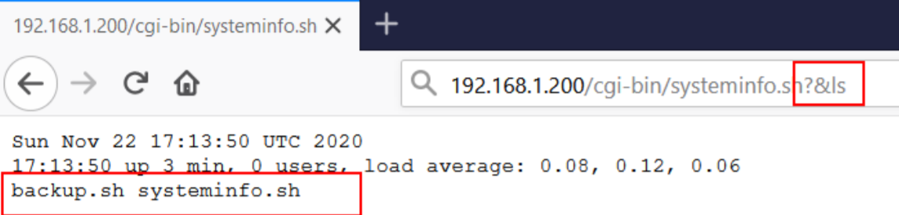

Use metasploit to gain shell on the victim server.
As you may have discovered throughout the "Web" portion of the event, webservers don't just display websites...They are capable of interacting with the operating system directly. The Common Gateway Interface or CGI for short is a standard means of communicating and processing data between a client such as a web browser to a web server. Simply, this technology facilitates interaction with programmes such as Python script files, C++ and Java application, or system commands all within the browser - as if you were executing it on the command line.
Despite their age, CGI scripts are still relied upon from devices such as embedded computers to IoT devices, Routers, and the likes, who can't run complex frameworks like PHP or Node.
Whilst CGI has the right intentions and use cases, this technology can quickly be abused. The commonplace for CGI scripts to be stored is within the /cgi-bin/ folder on a webserver. Take, for example, this systeminfo.sh file that displays the date, time and the user the webserver is running as:
When navigating to the location of this script using our browser, the script is executed on the web server, the resulting output of this is then displayed to us.
Shellshock is a critical vulnerability due to the escalated privileges afforded to attackers, which allow them to compromise systems at will. Although the ShellShock vulnerability, CVE-2014-6271, was discovered in 2014, it is known to still exist on a large number of servers in the world. The vulnerability was updated (CVE-2014-7169) soon after and has been modified up until 2018. The main reason Shellshock is still in use is no shocker. This vulnerability is a simple and inexpensive attack bad actors can deploy against an unknowing target. Patches have been available since the CVE entry, but any organization without proper patch management systems in place may still be vulnerable. Shellshock was still prominent in 2017. When all attackers need are some basic programming skills, a server and access to malware, it’s not surprising. Plus, the cost to carry out an attack isn’t much more than a few dollars per month. The math is in the attackers’ favor. Minimal knowledge, little effort and low cost equals one easy hacking strategy. Despite all the extensive cybersecurity media coverage and even a Department of Homeland Security alert, some systems remain unpatched. In one example, officials at the Center for Election Systems failed to apply a patch that compromised the Georgia elections systems.
How To Know if You’re Affected Because Shellshock is six years old, plenty of vulnerability scanners are available. Some of them are free. One, bashcheck, can be downloaded using Github. For those technical people, typing a simple command in the Bash prompt will also do the trick:
If the prompt returns a “Bash is Infected” message, it’s time to update and fix. If your output does not return “Bash is Infected,” it will respond with something like: bash: warning: VAR: ignoring function definition attempt bash: error importing function definition for `VAR’ Bash Test